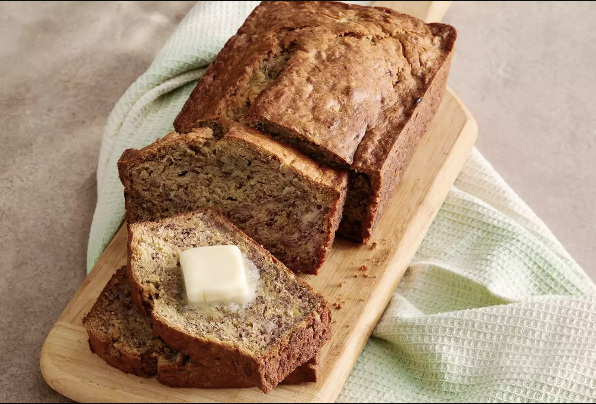
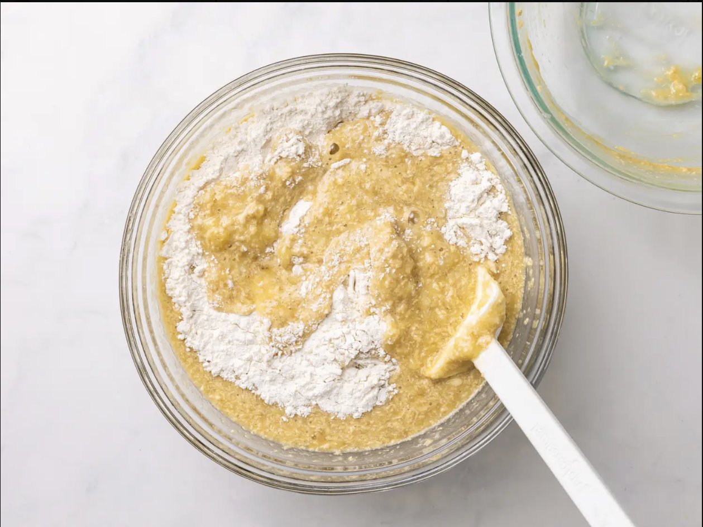

Banana Bread Recipe
Ingredients
- 2 Cup all-purpose flour
- 1 teaspoon baking Soda
- 1/4 teaspoon salt
- 1/2 cup butter
- 2 1/3 cups mashed overripe bananas
- 2 large eggs, beaten
- 3/4 cup brown sugar
Directions
- Gather all ingredients. Preheat the oven to 350 degrees F (175 degrees C). Lightly grease a 9x5-inch loaf pan.
- Combine flour, baking soda, and salt in a large bowl. Beat brown sugar and butter with an electric mixer in a separate large bowl until smooth. Stir in eggs and mashed bananas until well blended. Stir banana mixture into flour mixture until just combined.
- Pour batter into the prepared loaf pan.
- Bake in the preheated oven until a toothpick inserted into the center comes out clean, about 60 minutes.
- Let bread cool in pan for 10 minutes, then turn out onto a wire rack to cool completely.
Click here

